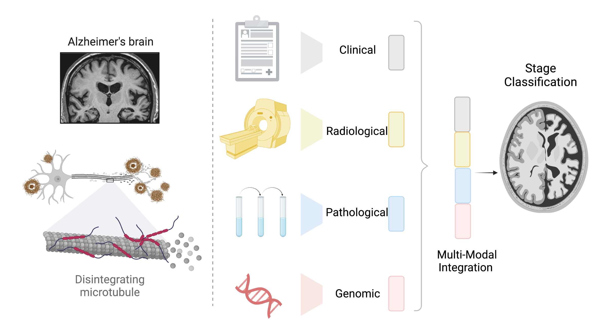
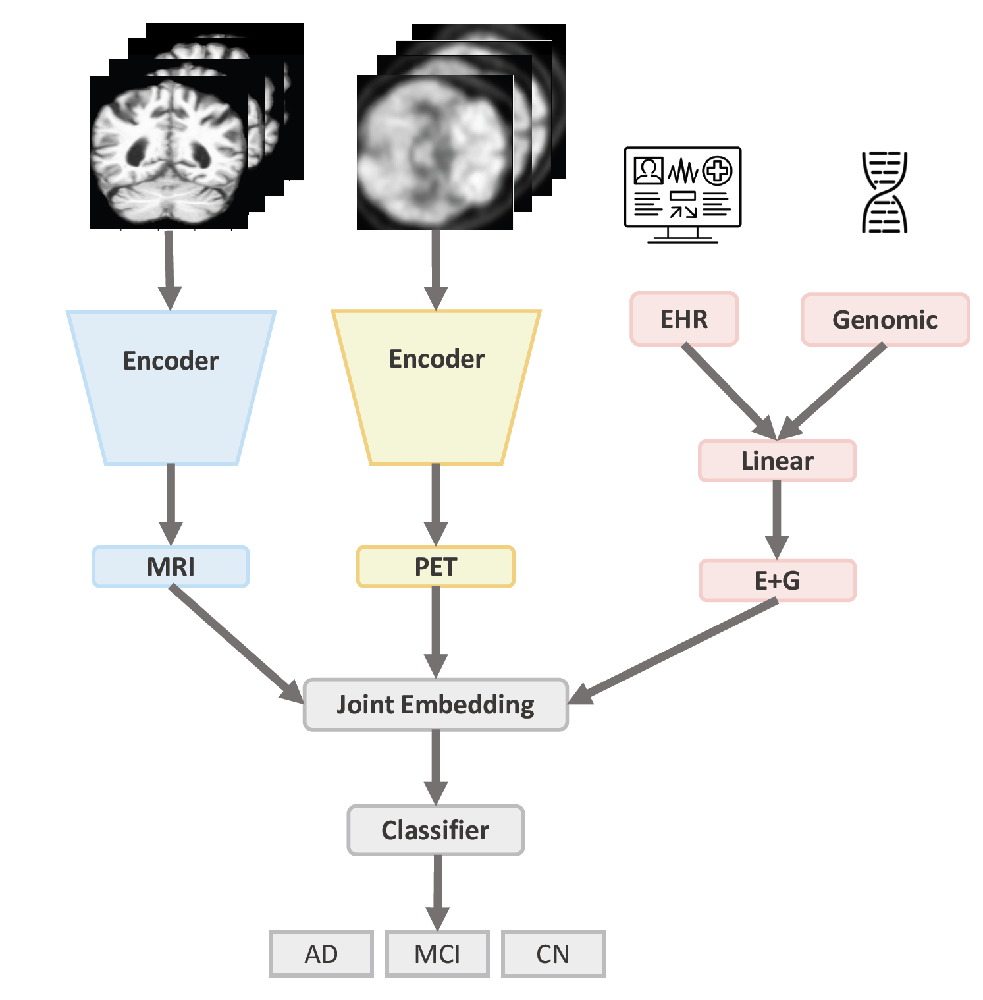
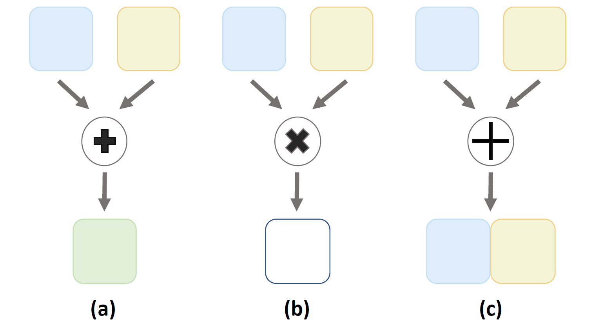
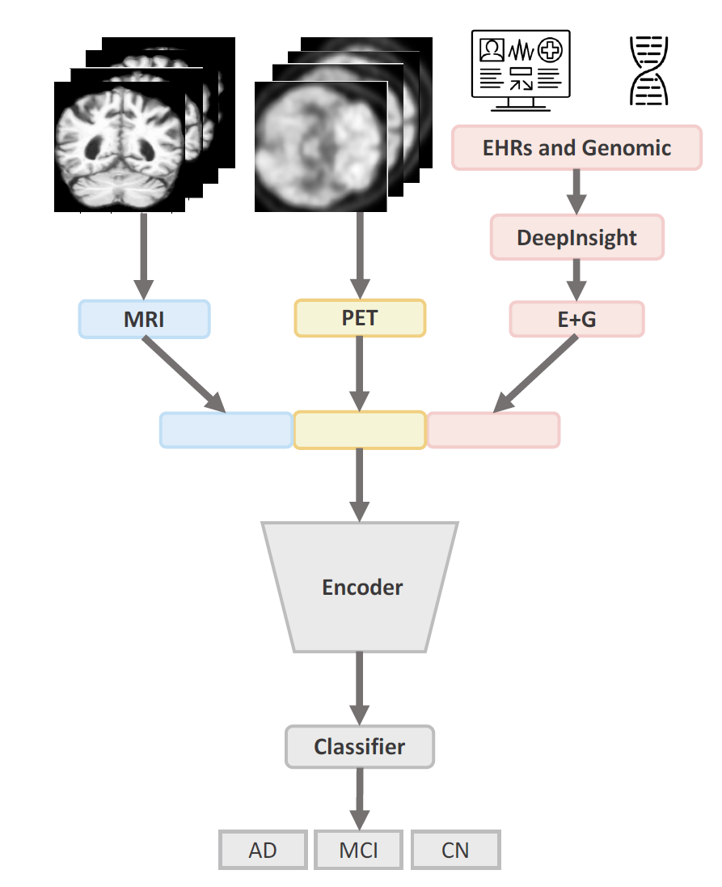
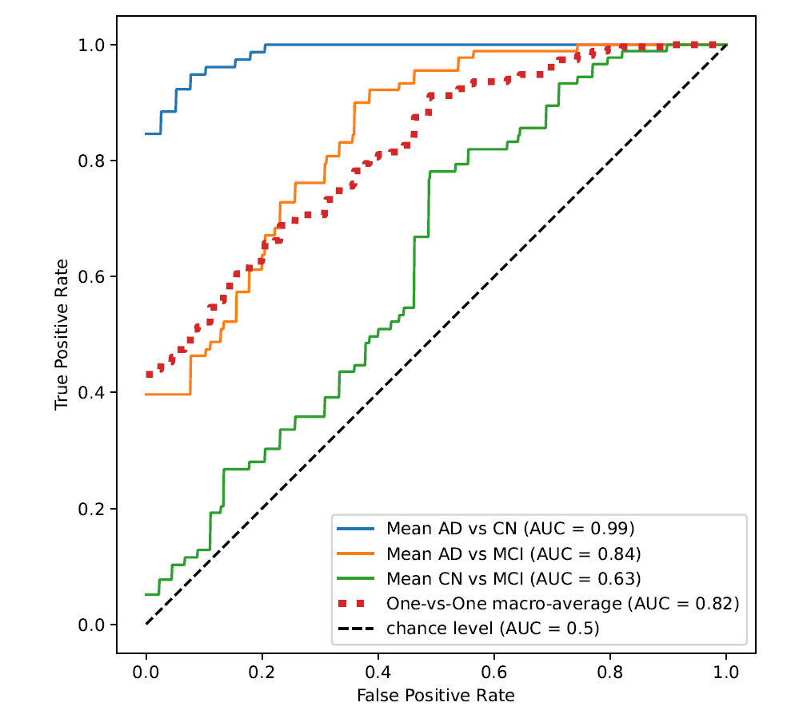
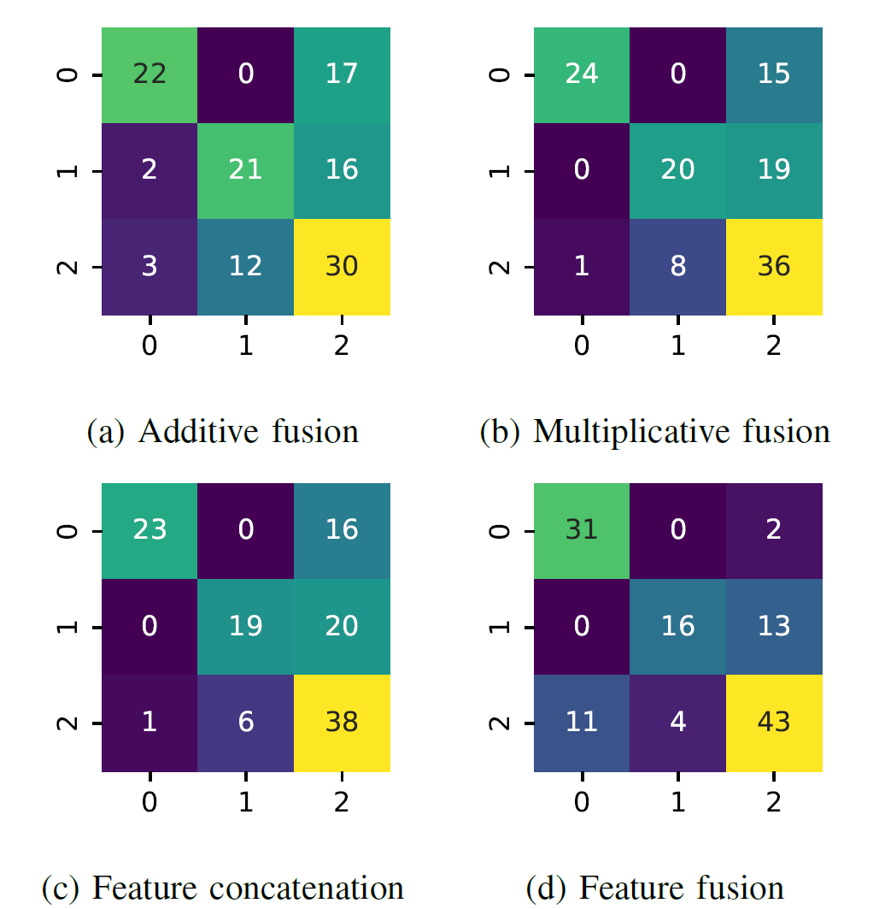

Alzheimer's disease (AD) is one of the leading causes of dementia and 7th leading cause of death in the United States. The provisional diagnosis of AD relies on comprehensive examinations, including medical history, neurological and psychiatric examinations, cognitive assessments, and neuroimaging studies. Integrating diverse sets of clinical data, including electronic health records (EHRs), medical imaging, and genomic data, enables a holistic view of AD staging analysis. In this study, we propose an end-to-end deep learning architecture to jointly learn from magnetic resonance imaging (MRI), positron emission tomography (PET), EHRs, and genomics data to classify patients into AD, mild cognitive disorders, and controls. We conduct extensive experiments to explore different feature-level and intermediate-level fusion methods. Our findings suggest intermediate multiplicative fusion achieves the best stage prediction performance on the external validation dataset. Compared with unimodal baselines, we can observe that integrative approaches that leverage all four modalities demonstrate superior performance to baselines reliant solely on one or two modalities. In an age-wise comparison, we observe a unique pattern that all fusion methods exhibited superior performance in the earlier age brackets (50-70 years), with performance diminishing as the age group advanced (70-90 years).

Fig. 1 — Overview: clinical, radiological (MRI/PET), pathological, and genomic data are jointly integrated for Alzheimer's disease stage classification.
Alzheimer's disease affects six million people in the US and is projected to triple by mid-century, with annual care costs approaching $305 billion. With no definitive cure, early detection and staging are critical for timely intervention. Clinicians already draw on multiple, complementary data sources for AD diagnosis: MRI reveals structural atrophy in the medial temporal lobe as the disease progresses, but atrophy patterns overlap across diseases and MRI cannot detect the molecular hallmarks of AD. FDG-PET detects hypometabolism from reduced synaptic activity, sometimes before symptoms appear, but is itself non-specific. Electronic health records and genomic markers add further, non-imaging signal.
Prior multimodal AD studies have typically combined only two of these sources at a time (e.g., MRI with EHR, or MRI with PET) and often relied on manually engineered features, which are labor-intensive and prone to distribution shift over time. This work is, to the authors' knowledge, the first comparative study of different fusion techniques for combining all four modalities — MRI, PET, EHR, and genomics — end-to-end, without hand-crafted feature engineering.
Data is drawn from the Alzheimer's Disease Neuroimaging Initiative (ADNI), using patients with at least one MRI and one PET scan plus matching EHR and genomic data. Scans span initial screening through 48-month follow-up visits, with each patient contributing on average 3.2 MRI and 5.12 PET scans. A patient-level 80:10:10 train/validation/test split (384 patients total) avoids data leakage across visits from the same patient.
| Split | Patients | Modality | AD | CN | MCI | Total |
|---|---|---|---|---|---|---|
| Train | 307 | MRI | 238 | 384 | 388 | 1010 |
| PET | 437 | 626 | 518 | 1581 | ||
| Val | 39 | MRI | 33 | 29 | 58 | 120 |
| PET | 60 | 48 | 79 | 187 | ||
| Test | 38 | MRI | 39 | 39 | 46 | 124 |
| PET | 75 | 55 | 71 | 201 |
3D ResNet18 CNNs extract embeddings from MRI and PET; dense ReLU blocks extract embeddings from EHR and genomics. Two families of fusion are compared:
Intermediate-level fusion combines per-modality embeddings after independent encoding, via one of three operators: concatenation, additive fusion (element-wise sum), or multiplicative fusion (element-wise product). For the full four-modality model, imaging embeddings are first fused, then concatenated with the EHR+genomics embedding before classification.
Feature-level fusion instead converts EHR and genomic tabular data into an image-like representation using the DeepInsight method (PCA-based pixel mapping), then concatenates this pseudo-image with the raw MRI and PET volumes into a single composite 3D image, which is fed through one 3D ResNet CNN end-to-end.

Intermediate-level fusion: independent MRI/PET encoders and an EHR+genomic branch are combined into a joint embedding before classification.

The three intermediate fusion operators compared: (a) additive, (b) multiplicative, (c) concatenation.

Feature-level fusion: EHR and genomic data are converted to a pixel-mapped image via DeepInsight and concatenated with MRI/PET before a single shared encoder.

Example DeepInsight pixel-mapped representations of EHR and genomic features, used as the tabular-data input channel for feature-level fusion.
Every multi-modal configuration outperforms its unimodal counterparts, and using all four modalities together beats using only one or two. Fusion quality follows a consistent ranking — concatenation < additive < multiplicative — holding for both the MRI+PET and full four-modality settings. The full MRI+PET+EHR+genomics model with intermediate multiplicative fusion achieves the best overall test accuracy.
Best overall accuracy
66.2%
Interm. multiplicative, all 4 modalities
AD vs. CN accuracy
91.5%
Interm. multiplicative, all 4 modalities
AD specificity
98.3%
Interm. multiplicative, all 4 modalities
| Modality | Fusion | Acc. | AD vs CN | AD vs MCI | CN vs MCI |
|---|---|---|---|---|---|
| MRI | — | 45.2% | 75.1% | 60.9% | 53.8% |
| PET | — | 57.5% | 80.0% | 72.1% | 63.5% |
| EHR+genomics | — | 60.4% | 90.2% | 73.3% | 68.8% |
| MRI+PET | Interm. Multi. | 55.1% | 77.4% | 73.1% | 60.7% |
| MRI+PET+EHR+genomics | Feature-level | 64.3% | 90.7% | 79.5% | 68.3% |
| MRI+PET+EHR+genomics | Interm. Concat. | 62.6% | 87.7% | 81.2% | 63.6% |
| MRI+PET+EHR+genomics | Interm. Additive | 62.7% | 90.0% | 80.4% | 64.3% |
| MRI+PET+EHR+genomics | Interm. Multi. | 66.2% | 91.5% | 79.2% | 71.2% |
Interestingly, MRI+PET alone performs on par with or worse than either modality in isolation — likely because two imaging streams add complexity without a commensurate increase in information. Adding EHR and genomics resolves this, suggesting the non-imaging modalities help the model interpret the added imaging complexity. As expected, distinguishing CN from MCI remains the hardest task across all model configurations, since MCI's clinical presentation overlaps with both normal aging and early AD.
ROC curves (AD vs CN, AD vs MCI, CN vs MCI) for the intermediate multiplicative fusion model on the held-out test set.

Confusion matrices (0 = AD, 1 = CN, 2 = MCI) for additive, multiplicative, feature-concatenation, and feature-level fusion.
All fusion methods perform best in the 50–70 age brackets, with accuracy degrading progressively in the 70–90 range — the 80–90 age group is consistently the largest contributor to error across every model configuration. Notably, this older age group also shows the highest agreement across different models, meaning models tend to consistently agree on (incorrect) predictions for these patients, while the 50–60 group shows the least model agreement — suggesting the performance gains from multimodal fusion are concentrated in accurately learning the earlier-age presentation of disease. This points to age as a potentially useful explicit input feature in future model iterations, and highlights that older patients with likely more comorbidities and atypical presentations remain the harder subgroup to serve.
@inproceedings{singh2023multimodal,
title = {{Multi-Modal Deep Feature Integration for Alzheimer's Disease Staging}},
author = {Singh, Amritpal and Shi, Wenqi and Wang, May D.},
booktitle = {2023 IEEE International Conference on Bioinformatics and Biomedicine (BIBM)},
year = {2023},
publisher = {IEEE},
doi = {10.1109/BIBM58861.2023.10431906}
}